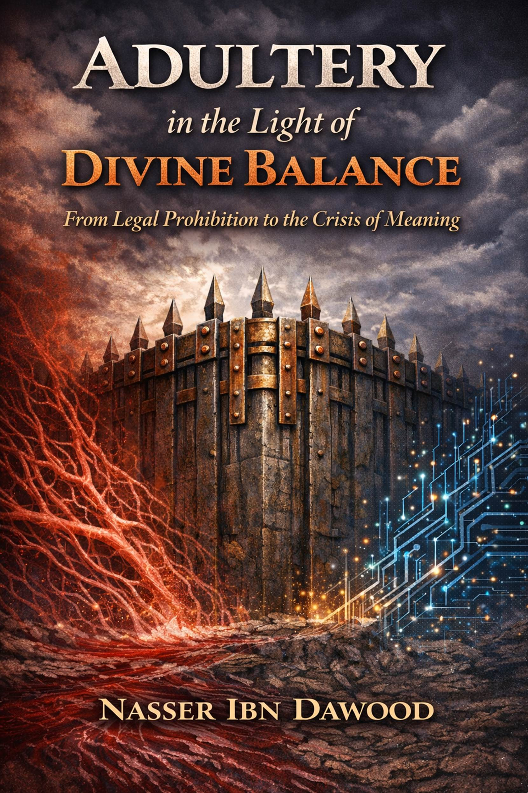

by Nasser Ibn Dawood
This book is not about controlling bodies, nor about policing desire.
It is about something far more fundamental: the loss of balance between
desire and meaning.
In many modern societies, sexual freedom is framed as a personal right, detached from metaphysics, ethics, or long-term responsibility. The act is isolated, reduced to consent and pleasure, while its deeper consequences—relational, psychological, and civilizational—remain largely unexamined.
The Qur’anic perspective does not begin with prohibition.
It begins with balance (al-Mīzān)—a universal
principle governing nature, human relationships, and moral order. Within this
framework, sexuality is neither demonized nor absolutized. It is understood as
a powerful energy that must be integrated into a meaningful structure, not left
to roam without orientation.
The concept commonly translated as adultery (zinā)
is often misunderstood. In this book, it is not treated as a mere legal
offense, but as a symptom of disconnection:
a rupture between desire and responsibility, pleasure and trust, the individual
and the larger human narrative.
This work proposes a shift in perspective—from moral judgment to structural understanding. It asks not “Who is guilty?” but “What collapses when meaning is removed from intimacy?”
Written for readers unfamiliar with Islamic theology, this book avoids religious jargon and cultural assumptions. Qur’anic insights are presented as conceptual tools, not dogmatic claims. The aim is dialogue, not persuasion.
In an age where intimacy has become abundant but fragile, this book
invites the reader to reconsider a simple question:
What happens to a civilization when desire is freed from meaning, but
responsibility is left behind?
The Principle of Balance (Al-Mīzān)**
The Qur’an introduces the universe not as a random accident, nor as a battlefield of competing forces, but as a balanced system. This balance—referred to as al-Mīzān—is not limited to physical laws. It extends into ethics, relationships, and human responsibility.
Balance, in this sense, is not equality. It is proportion. Every force has a place, every desire a context, every freedom a direction. When balance is respected, systems remain coherent. When it is violated, corruption does not appear immediately as chaos—it appears first as misalignment.
Modern thought often separates ethics from structure. Moral questions are treated as private preferences rather than systemic necessities. The Qur’anic view is fundamentally different: it treats moral imbalance as a structural disturbance, one that inevitably spreads beyond the individual.
Sexuality, therefore, is not approached as a moral exception. It is subject to the same logic that governs trust, power, wealth, and knowledge. When desire operates within balance, it becomes a source of connection and continuity. When it escapes balance, it begins to erode the very bonds it claims to fulfill.
From this perspective, the Qur’an does not prohibit acts arbitrarily. It protects structures—family, lineage, trust, and social coherence. What is commonly framed as “moral restriction” is, in reality, systemic protection.
Al-Mīzān invites a different kind of ethical
thinking:
not “Is this allowed?” but “Does this preserve balance, or does it quietly
dismantle it?”
Sexuality Beyond Biology**
In contemporary discourse, sexuality is often reduced to biology and consent. Desire is framed as an instinct, and fulfillment as a private transaction. While this framework appears liberating, it overlooks a critical dimension: meaning.
The Qur’anic worldview does not deny desire. On the contrary, it recognizes it as a potent force—one capable of building life or dissolving it. Desire is not dangerous because it exists, but because it can detach from responsibility.
Sex, in this reading, is not merely an act. It is a relational event. It binds bodies, but it also binds narratives: past and future, trust and expectation, identity and consequence. When sexuality is removed from these narratives, it does not become free—it becomes fragmented.
This fragmentation explains a modern paradox: unprecedented sexual freedom accompanied by rising emotional instability, fragile relationships, and identity confusion. Pleasure increases, but coherence decreases.
The Qur’an addresses this not through repression, but through integration. Sexuality is embedded within a framework that gives it direction—marriage not as a ritual, but as a stabilizing structure that aligns desire with continuity.
Zinā, in this context, is not defined by passion alone. It is defined by dislocation: intimacy without covenant, pleasure without narrative, connection without responsibility. The harm lies not only in the act itself, but in what the act unravels over time.
Thus, the Qur’anic concern is not about controlling desire, but about preventing its transformation into a corrosive force—one that consumes trust while promising fulfillment.
When the Act Detaches from Meaning**
Every civilization draws invisible lines between acts that build continuity and acts that dissolve it. These lines are rarely arbitrary. They emerge from long observation of what preserves coherence and what erodes it from within.
When an act is severed from its meaning, it does not become neutral—it becomes unstable. Sexual intimacy, when isolated from commitment and narrative, shifts from being a connective force to a transactional one. What once linked lives now passes through them without leaving roots.
The Qur’anic framework identifies zinā not as an emotional failure, but as a structural rupture. The act itself is not judged in isolation; its ripple effects are. Trust becomes provisional, relationships become temporary, and identity becomes fluid without anchor.
Modern ethics often assume that consent resolves moral complexity. Yet consent alone cannot account for long-term consequences. Two individuals may agree, but the system they inhabit absorbs the impact. Families, children, and social trust quietly bear the cost.
This is why the Qur’an treats certain acts as threats to balance rather than private choices. The concern is not personal guilt, but collective vulnerability. When intimacy becomes detached from responsibility, society loses its ability to transmit meaning across generations.
Zinā, then, is not merely forbidden—it is diagnosed. It signals a deeper disorder: the collapse of relational coherence in favor of momentary satisfaction.
Trust, Covenant, and Human Bonds**
Trust is the invisible infrastructure of every stable society. It cannot be legislated into existence, nor can it survive repeated erosion. Sexual relationships, more than any other human interaction, test the durability of trust.
In the Qur’anic vision, intimacy is placed within a covenantal structure. Marriage is not sanctified for its form, but for its function: it transforms desire into responsibility and passion into continuity.
Without covenant, relationships become provisional. Individuals protect themselves emotionally, anticipating exit rather than investing in permanence. Over time, this produces a culture of guarded intimacy—where connection exists, but vulnerability does not.
The harm of zinā unfolds slowly. It does not always appear as scandal or collapse. Often, it manifests as cynicism: diminished expectations, fragile commitments, and the normalization of emotional disposability.
The Qur’an’s protective stance is thus deeply pragmatic. It recognizes that trust, once broken repeatedly, cannot be easily restored. Societies that normalize unbound intimacy gradually lose their capacity for deep relational bonds.
Here, morality is not about virtue signaling. It is about preserving the conditions under which trust can survive.
The Collapse of Lineage and the Loss of Narrative**
Every society tells a story about itself. This story is not written only in books, but in names, families, and lines of descent. Lineage is not merely biological—it is narrative continuity.
The Qur’anic concern with lineage is often misunderstood as obsession with blood. In reality, it is concern with meaningful transmission: identity, responsibility, and belonging. When lineage becomes ambiguous or irrelevant, individuals are severed from a larger story.
Zinā disrupts this narrative. It fragments the chain through which responsibility is inherited and memory is preserved. Children may still be born, but their symbolic placement within a coherent story becomes unstable.
Modern culture often celebrates self-invention. Yet complete self-invention produces isolation. Without inherited narratives, individuals carry the full burden of identity alone. This produces anxiety, not freedom.
The Qur’anic system protects lineage not to preserve tradition, but to preserve orientation—a sense of where one comes from and where one is going.
Modern Freedom and the Illusion of Choice**
Freedom, in modern discourse, is often defined as the absence of limits. The more options available, the freer the individual is assumed to be. Yet abundance of choice does not guarantee clarity of direction.
In the realm of sexuality, this illusion becomes visible. Endless options weaken commitment. The possibility of replacement undermines the motivation to repair. Desire becomes restless, constantly recalibrated.
The Qur’an approaches freedom differently. True freedom is not the multiplication of options, but the ability to act without internal fragmentation. Limits are not enemies of freedom; they are its architecture.
Zinā thrives in environments where choice is disconnected from consequence. It is not rebellion—it is drift.
Qur’anic Logic vs. Moral Surveillance**
One of the most persistent misunderstandings about Islamic ethics is the assumption that it is built on surveillance and punishment. The Qur’anic logic is the opposite.
The Qur’an minimizes exposure, discourages suspicion, and places a high evidentiary barrier before any legal action. Why? Because its primary concern is moral health, not public spectacle.
Zinā is addressed as a societal risk, not a tool for shaming. The Qur’an seeks to close the pathways that normalize imbalance, not to police private lives.
This reveals a crucial distinction:
The Qur’an governs structures, not impulses.
Restoring the Balance**
The solution proposed by the Qur’an is not repression, nor is it indulgence. It is realignment.
Restoring balance means reconnecting desire with meaning, freedom with responsibility, and intimacy with trust. It requires cultural shifts, not merely legal ones.
A society that treats desire as sacred but responsibility as optional will eventually collapse under its own contradictions.
The Qur’anic vision offers an alternative:
a civilization where desire is honored, but never left
unanchored.
Beyond Prohibition: Toward Human Stewardship**
This book has not argued for moral superiority, nor for cultural nostalgia. It has argued for coherence.
Zinā, in the Qur’anic worldview, is not a private failure. It is a signal that balance has been disturbed. Addressing it requires more than rules—it requires restoring meaning.
Human beings are not merely consumers of pleasure. They are stewards of continuity.
When desire is guided by meaning, it builds life.
When it is severed from it, it quietly unravels what took generations to form.
The choice facing modern civilization is not between freedom and faith, but between fragmentation and balance.
Introduction
The concept of adultery (zina) is among the most sensitive and challenging in contemporary Islamic consciousness. This is true not only regarding its legal ruling but also concerning its semantic structure, ethical function, and position within the Quran's comprehensive value system. The prevalent juristic understanding has narrowly defined adultery as direct, illicit sexual intercourse outside of legal marriage—a categorical, established meaning that this book neither disputes nor seeks to nullify.
However, limiting the concept to this level alone, without considering the wider Quranic context, has contributed—intentionally or not—to reducing adultery to an isolated issue, detaching it from the universal moral framework the Quran establishes, foremost among them: Justice (‘Adl), Equity (Qist), and the Balance (Mizan).
This book is based on a core methodological premise: the Quran does not present ethical concepts as isolated commands and prohibitions but integrates them within a coherent cosmic system governed by immutable laws, expressed Quranically as the "Balance" (Al-Mizan), as in: "And the heaven He raised and imposed the Balance, That you not transgress within the balance. And establish weight in justice and do not make deficient the balance." (Quran 55:7-9).
Accordingly, this research proposes a two-level, complementary reading of adultery:
This expansive reading does not linguistically label every injustice as "adultery," nor does it equate them in legal penalty. Its goal is to understand the deep Quranic rationale that makes sexual adultery a major crime: it is an assault on the "balance of relationship" itself, not merely an isolated formal violation.
The book relies on Quranic linguistic analysis, adhering strictly to the principle that context is the supreme determinant of meaning. It engages with classical exegesis and subjects contemporary readings to critique, aspiring to reintegrate this concept within the Quranic system of the Balance as a tool for understanding individual and social corruption, and a gateway to rebuilding ethical consciousness on a coherent Quranic foundation.
Introduction
1.1 The Quranic Linguistic Method
The Quran was revealed in clear Arabic, with a precise, interlocking structure.
Its language is not arbitrary but dynamic and derivational, rooted in
physical-phonetic meanings. We must distinguish between Divine speech (from the
All-Knowing, Wise) and human discourse.
1.2 Phonetic Analysis of "Zina"
The trilateral root Z-N-Y (ز ن ي) is fundamental. It cannot be reduced to a bilateral root "ZN." Lexicons like Lisan al-Arab define it as "illicit sexual intercourse."
Comparison with related roots:
1.3 Connection to the Divine Balance
In this framework, "Zina" is the activation of a relational
or exchange system outside its legitimate, balanced path, thus causing a
disruption (khusran) in the cosmic and social
Balance. This links the literal act to its profound moral consequence:
imbalance.
Adultery, in its expansive sense, becomes a template for any deliberate disruption of the Divine Balance—the system God established to regulate creation and human relations with justice.
This includes:
Thus, countless societal behaviors that violate justice, fairness, and trust fall under the Quranic logic of "Zina" as a rebellion against the balanced divine order.
5.1 Slander (Ifk)
Ifk means a gross, malicious lie. In
Quranic context (Surah An-Nur, verses 11-20), it refers to the slander against
Prophet Muhammad's wife, Aisha. It is verbal adultery, poisoning
the well of social trust. The Quran prescribes severe punishment for false
accusation of chastity (80 lashes, 24:4), aiming to restore the social balance
of honor and credibility.
5.2 Prostitution (Bagha')
Bagha' refers to transactional, often exploitative, sexual
relations. The Quran explicitly forbids forcing female slaves into
prostitution (24:33), highlighting it as a dual crime: sexual
violation and economic exploitation. It is a coerced, commercial
adultery that disrupts both moral and economic balance. The sin lies
with the coercer, while God's mercy is for the coerced.
8.1 Surah An-Nur: The Chapter of Light & Social Reform
This chapter is central to legislating on matters of chastity and social order.
8.2 The People of Lot: Beyond Literal Homosexuality
The Quran condemns the act of Lot's people as an unprecedented
"obscenity" (7:80). While the traditional focus is on the homosexual
act, an expansive reading sees it as a comprehensive societal imbalance:
The prescribed punishments are not merely retributive but carry a reformative, symbolic function aimed at healing the social body.
The goal is always Islah (reform) and the restoration of Al-Mizan.
The Quran's discourse on adultery is inseparable from its call to repentance and forgiveness. After establishing severe penalties, it immediately opens the door: "Except for those who repent thereafter and reform, for indeed, Allah is Forgiving and Merciful." (24:5).
Forgiveness is the ultimate divine mechanism for restoring the internal and external balance broken by sin. It allows the individual and the community to move forward from the point of justice served towards healing and reconciliation, completing the cycle of Balance -> Disruption -> Justice -> Forgiveness -> Restored Balance.
Salvation lies in conscientiously upholding the Divine Balance in all affairs:
This expansive interpretation seeks not to dilute the legal rulings of Islam but to deepen our understanding of their wisdom. By seeing "adultery" as a archetype for all forms of exploitative, dishonest, and disruptive behavior that throw life out of balance, the Quran calls us to a comprehensive ethical vision. It invites us to build societies where relationships—with God, with one another, with ourselves, and with the world—are conducted with justice, integrity, and respect for the sacred Balance placed by the Creator in the very fabric of the heavens and the earth.
About the Library and
Methodology
1.
Nasser Ibn Dawood Library: General Introduction
Nasser Ibn Dawood Library is an open digital library containing my works in Quranic sciences, contemplation (tadabbur), and contemporary Quranic studies. It is designed to be compatible with automated search and artificial intelligence, facilitating crawling through its content, analyzing its texts, and internally linking its concepts.
The library aims to contribute to decoding the semantic structure of the Holy Quran through contemplation, tracking Quranic expression patterns, and working on what I call the "Quranic tongue" as a self-contained semantic system derived from the text itself.
As of December 28, 2025, the library contains 46 continually updated books (23 in Arabic and 23 in English), with versions and content updated whenever scientific review requires it.
2.
Standing at the Threshold of Gratitude
This work is but a drop in the ocean of Quranic contemplation. Every understanding is the fruit of an encounter between the text, the mind, the context, and the experiences of contemplators across time.
In this journey, I have stood at the thresholds of many minds and enlightened hearts, borrowing light from them and drawing insight, with direct or indirect influence in shaping this path. Therefore, this section is not a formal introduction, but an acknowledgment of grace, and a recognition that contemplation is a collective effort, not attributable to an individual no matter how much they exert.
Nasser Ibn Dawood
Civil engineer specializing in metals, and researcher in Quranic studies.
Graduate of the Polytechnic Faculty – University of Mons (Belgium).
Born in Morocco: April 27, 1960.
Retired employee, currently dedicated to research and authorship.
His work focuses on:
- Quranic linguistics and the structure of Quranic terminology
- Digital text and manuscript analysis
- Contemporary methodologies for contemplation and linking the Quran to reality
This work is the fruit of an intersection between:
Engineering, language, contemplation, and reflection on divine laws
Without claiming to reach absolute truth, but striving to approach it.
4.
The Governing Methodological Statement
All books in this library proceed from a single fixed methodology, based on:
Everything presented in these books is:
Human endeavors and contemplations that are not infallible
They may be correct or mistaken, do not represent a final interpretation of God's Book, and do not obligate anyone to follow them.
Rather, they are offered as attempts at understanding, presented with evidence, leaving the reader free to accept or reject them,
For guidance is a choice, and accountability is individual.
We believe that contemplation is:
A collective, cumulative, open process
In which visions integrate, minds intersect, without monopolizing truth or sanctifying human understanding.
The ultimate authority is for the Quranic text alone, not for persons or methodologies.
Continuous Review and Acknowledgment of Error
We consider that:
Acknowledging error is a scientific virtue
And reviewing endeavors is an ethical duty.
Accordingly, the content of these books is subject to review, modification, and deletion whenever a flaw is revealed.
Stability is for the text, not for understanding.
This project adheres to clear Quranic ethics:
- No belittling
- No accusations of betrayal
- No intellectual guardianship
- No conflict in the name of religion
﴿There is no compulsion in religion﴾
Disagreement is a norm, guidance is a choice, and accountability is individual.
Guidelines for Following the New
We welcome contemporary endeavors and contemplative renewal, provided:
- Internal harmony of the Quranic text
- Reliance on reason, innate disposition, and God's laws
- Balance between heritage and contemporary endeavor
- Rejection of sanctifying persons
In compliance with the Quranic methodology: ﴿Those who listen to the word and follow the best of it﴾
The Comprehensive Methodology: Security
and Peace
The governing methodology for these books is:
The methodology of security and peace
Security of thought from blind sanctification
And peace of discourse from incitement
And peace in the relationship with God and creation
Believing that Quranic knowledge is a shared right not to be monopolized,
All library books are made available for free and without charge, allowing copying and distribution provided the source is cited without alteration.
Available formats: PDF – HTML – TXT – DOCX
Languages: Arabic and English
Design: Compatible with all devices
6.
Translation and Global Access Policy
Believing in the universality of the Quranic message, the books are available in English through:
• Concise Conceptual Version: A smart translation of selected books to simplify concepts for the average reader.
• Comprehensive Instant Translation: Fully translated using Google Translate for researchers.
We encourage translators and publishers to improve and publish their translations.
Bilingual interface and content (Arabic/English) using instant translation technologies to ensure global accessibility.
Artificial Intelligence and Quranic Research
The library is designed to be compatible with artificial intelligence tools, as an aid for:
- Search
- Summarization
- Conceptual analysis
With emphasis that:
Artificial intelligence results are approximations that are not infallible,
And do not substitute for direct reading and personal contemplation.
This project focuses on analyzing terminology from within the Quranic tongue itself, not from abstract dictionaries.
7.
Links to Nasser Ibn Dawood Library and Additional Resources
To connect with the library's content and benefit from its diverse resources, you can visit the following platforms:
🏠 Official Project Websites
1. The official library website (dedicated to artificial intelligence): [https://nasserhabitat.github.io/nasser-books/](https://nasserhabitat.github.io/nasser-books/)
2. Main GitHub repository: [https://github.com/nasserhabitat/nasser-books](https://github.com/nasserhabitat/nasser-books)
📚 Book Publishing Platforms
3. Kotobati platform: [https://www.kotobati.com](https://www.kotobati.com)
4. Noor-Book platform: [https://www.noor-book.com](https://www.noor-book.com)
5. Scribd platform: [https://fr.scribd.com/home](https://fr.scribd.com/home)
☁️ Storage and Content Platforms
6. Google Drive
7. Archive.org
8.
Knowledge Links and Sources of Inspiration
Recognizing that contemplation is a continuous journey, I have benefited from many enlightened minds, and among the most prominent channels I follow and draw inspiration from:
● Amin Sabry channel (@BridgesFoundation)
● Abdel Ghani Bin Aouda channel (@abdelghanibenaouda2116)
● Quranic Contemplations with Ihab Hariri channel (@quranihabhariri)
● Firas Al-Moneer Academy channel (@firas-almoneer)
● Dr. Yusuf Abu Awad (@ARABIC28)
● The Truth of Islam from the Quran channel (@TrueIslamFromQuran)
● Quranic Dialogue Oasis channel
(@QuranWahaHewar)
● Quranic Islam channel - Advisor Abu Qarib (@Aboqarib1)
● Yasser Al-Adirgawi channel (@Yasir-3drgawy)
● People of the Quran channel (@أهلالقرءان-و2غ on Fitrah (@alaalfetrh)
● Mahmoud Mohamedbakar channel (@Mahmoudmbakar)
● Yasser Ahmed channel (@Update777yasser)
● Eiman in Islam channel (@KhaledAlsayedHasan)
● Ahmed Dessouky channel - Ahmed Dessouky (@Ahmeddessouky-eg)
● Bayanat from Guidance channel (@بينات_من_الهدى)
● Quran Recitation channel (@tartilalquran)
● Increase Your Knowledge channel (@zawdmalomatak5719)
● Hussein Al-Khalil channel (@husseinalkhalil)
● Minbar of the People of Understanding - Wadih Kitane channel (@ouadiekitane)
● Mujtama Community channel (@Mujtamaorg)
● OKAB TV channel (@OKABTV)
● Aylal Rachid channel (@aylalrachid)
● Dr. Hani Al-Wahib channel (@drhanialwahib)
● Official channel of researcher Samer Islambouli (@Samerislamboli)
● Contemplate with Me channel (@hassan-tadabborat)
● Nader channel (@emam.official)
● Amin Sabry channel (@AminSabry)
● Dr. Mohamed Hedayah channel (@DRMohamedHedayah)
● Abu-l Nour channel
(@abulnour)
● Mohamed Hamed channel - Let Them Contemplate His Verses (@mohamedhamed700)
● Ch Bouzid channel (@bch05)
● Book Speaks the Truth channel (@Book_Of_The_Truth)
● Dhikr for the Furqan channel (@brahimkadim6459)
● Amera Light Channel (@ameralightchannel789)
● Contemporary Contemplation channel (@التدبرالمعاصر)
● Dr. Ali Mansour Kayali channel (@dr.alimansourkayali)
● To Our Lord We Shall Return channel (@إِلَىرَبِّنالَمُنقَلِبُون)
● Al-Za'im channel (@zaime1)
● Majesty and Beauty channel for Dr. Sameh Al-Qalini (@الجلالوالجمالللدكتورسامحالقلين)
● Verses of God and Wisdom channel (@user-ch-miraclesofalah)
● Engineer Adnan Al-Refai channel (@adnan-alrefaei)
● Believe1.2_Only the Book of God Muslim channel (@dr_faid_platform)
● Khaled.a..hasan Khaled A. Hasan channel
● Essam Al-Masri channel (@esam24358)
● Ibrahim Khalil Allah channel (@khalid19443)
● Bellahreche Mohammed channel (@blogger23812)
In addition to the personal journey and the ongoing project, I relied on a number of sources and references that formed the infrastructure of this research, the most important of which are:
● The Holy Quran and the Noble Prophetic Sunnah.
● Classical Tafsir books: Interpretations of the great imams like Al-Tabari, Ibn Kathir, and Al-Fakhr Al-Razi.
● Arabic language dictionaries: Led by "Lisan Al-Arab" by Ibn Manzur, and "Taj Al-Arus" by Al-Zabidi.
● Books on Quranic sciences: Those that dealt with scientific, cosmic, and structural miracles in the Quran.
This work is a humble effort, presented before God and then before you.
Every correctness in it is from God, and every error is from myself.
I ask God to benefit those who read or contemplate it,
And to place it in the balance of good deeds for my parents, and everyone who taught me and guided me to goodness.
﴿Our Lord, accept [this] from us. Indeed, You are the Hearing, the Knowing﴾
And praise be to God, Lord of the worlds.
Book Cover: Decoding
Cosmic Code - From Myth to Law: Entirely New Reading of Angels
Questions the modern mind's understanding of angels. Bold book by Nasser Ibn Dawood deconstructs traditional views, rebuilds via "principled informational method" integrating revelation/science.
Key discoveries: Angels as executive laws; brain as throne; Jibril/Mika'il/Israfil in scientific terms; Satan as entropy; Adam as first cosmic update.
Restores faith: Quran as laws, not myths; science as meaning extension.
Angels, scientific miracle, quantum physics, Quran interpretation, Nasser Ibn Dawood, consciousness, spirit, principled informational method, AI in Quran, philosophy of religion, entropy, energy, genetic code, Adam story, creation, metaphysics, Quranic psychology, religious discourse renewal, atheism/faith, human brain, cosmic principles, Jibril, Mika'il, Israfil, death angel, afterlife, divine programming, Quran secrets, Islamic thought books.